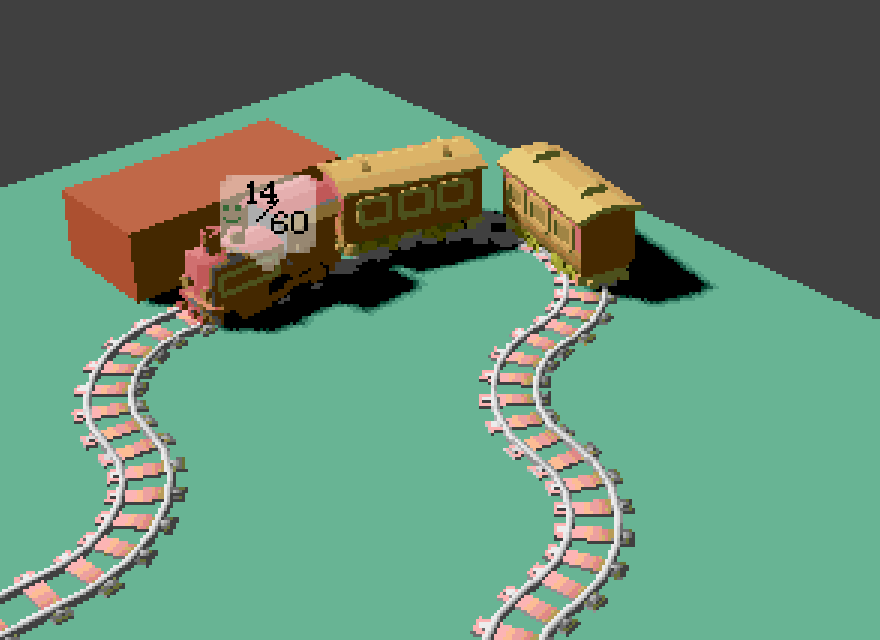
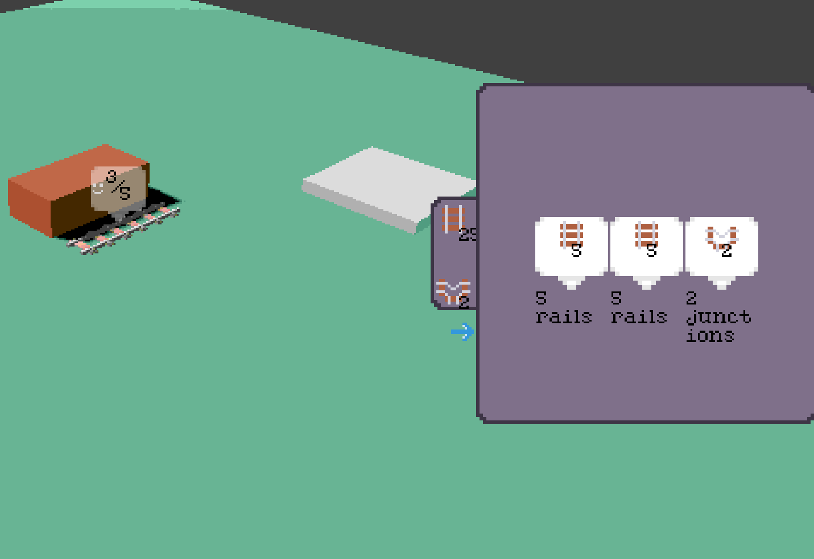
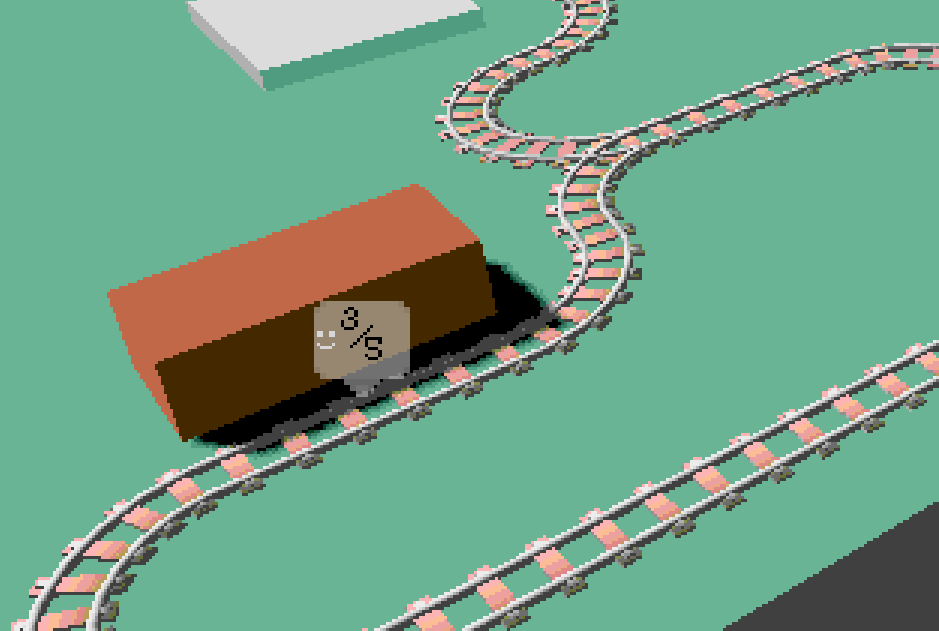
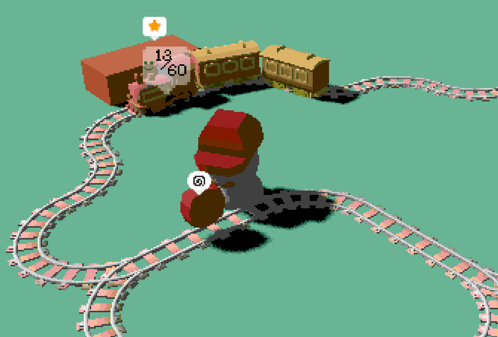
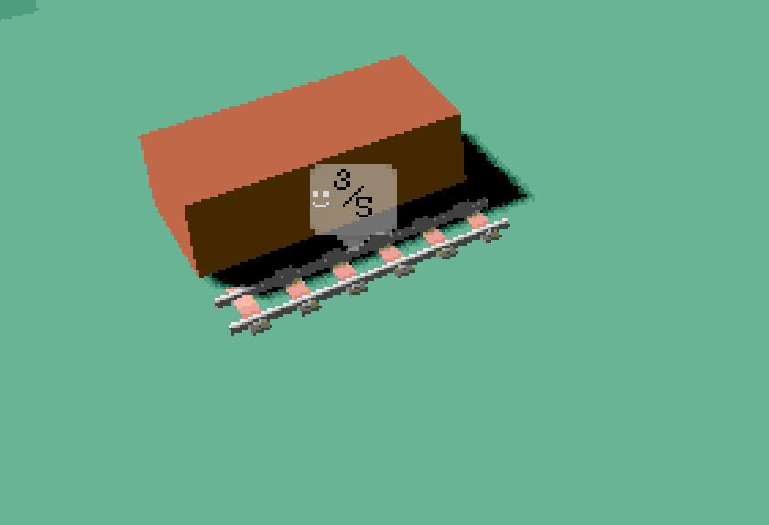

Loco-Comotives is a train management game I have been working on since November 2025. By creating multiple prototypes and playtesting with friends I have been able to hone in on a concept I feel confidently about. I am working towards finishing the game and am aiming to release the game publicly. Due to my early stage in development, however, I am unable to provide a release date at the current time.





Here will be a more in depth look at the development process, some of the systems, and the future of the project.